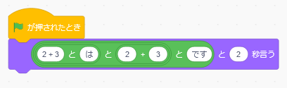

## <div style="border: thin solid; border-radius: 8px; padding: 8px; background: white;"><font color="midnightblue" style="text-transform:none;">シェルスクリプトで<br>手早くテキスト処理しよう！</font></div> [KidsとオトナのコンピュータとのかかわりLT会](https://36tech.connpass.com/event/212874/)(2021/06/19) <!-- <img src="https://pbs.twimg.com/profile_images/2577120213/74t8gdwg96vj93vg46a4_200x200.png" width="40" height="40"> --> [@furandon_pig](https://twitter.com/furandon_pig)
### 自己紹介 <img src="https://pbs.twimg.com/profile_images/2577120213/74t8gdwg96vj93vg46a4_200x200.png" width="80" height="80"> [@furandon_pig](https://twitter.com/furandon_pig) <p> 小さなWebアプリを細々と作っています。 * [ぬりえアプリ](https://furandon-pig.github.io/nurie/) * [Brocco.graph](https://furandon-pig.github.io/fpig_sample/hobby/brocco_graph/) * [ジャンプ作家風 巻末コメントアプリ](https://furandon-pig.github.io/jump_comment_app/) * [セリフ書き込みアプリ](https://furandon-pig.github.io/mmr-kitsune-san/) </p>
### Scratchによるプログラミング * [金種表の計算](https://scratch.mit.edu/projects/508702223/) * [逆ポーランド記法の計算機](https://scratch.mit.edu/projects/508720914/) #### 実用的なアプリも作成できそう！😃
### とは言うものの… * テキスト(文字列)の処理はちょっと面倒…😯 
### 今日のお話 * 「シェルスクリプト」の簡単な紹介。 * テキスト処理が手早くできるよ。 * ちょっとしたプロトタイプの作成に便利。
### シェルスクリプトって何？ * シェル * OS(オペレーティングシステム)と人間がやり取りするためのインタフェースです。 * Linux,macOS,WindowsなどのOSがあります。 * 一連のやりとりを記述したものがシェルスクリプトになります。 * Raspberry Piの「ターミナル」等からシェルを触ることができます。
### シェルスクリプトの例 * 今日の曜日を表示してみます。 ```sh $ date 2021年 6月 19日 土曜日 13:33:10 JST $ $ echo "今日は`date | awk '{ print $4 }'`です。" 今日は土曜日です。 ```
## Scratchの場合
## テキスト処理ならシェルスクリプトが便利 * 一見難しそうに見えるけど、覚えるコマンドは十数個くらい。 * コマンドをブロックのようにつなぎ合わせて処理します。
## よく使うコマンド | コマンド | 説明 | | --- | --- | | `cat` | ファイルの中身を出力 | | `awk` | 特定のフィールドを出力(*1) | | `cur` | 特定の区切り文字で分割 | | `sort` | テキストを行ごとにソート | | `uniq` | 重複行を除去 | | `grep` | 特定のパターンで行を抜き出す | * `*1` : ホントはawk単体でプログラミング言語として利用できます。
## シェルスクリプトの簡単なサンプル * 献立表からメニューを抜き出してみる * [石狩市 6月予定献立表](https://www.city.ishikari.hokkaido.jp/soshiki/kyuusyoku/33703.html)
### 献立表のダウンロード ```sh $ sudo apt install xpdf $ curl -sLO 'https://www.city.ishikari.hokkaido.jp/uploaded/attachment/37676.pdf' $ pdftotext 37676.pdf ```
### メニューを抜き出してみる ```sh $ grep -A4 '[０-９]日' 37676.txt \ | paste - - \ | sed \ -e "s/（.*）//g" \ -e "s/(.*)//" \ | grep 日 ```
### 実行結果 * 献立表が取得できた！😃 * (ちゃんとパースできてないものもいくつかあるけど...) ```sh １日,きつねうどん ２日,豚丼 ３日,ブラウンシチュー ４日,ごはん ７日,イエスクリーン米 ８日,担々麺 １１日,ごはん １８日,豆腐の中華煮 ２１日,きのこ汁 ２２日,ピリ辛野菜ラーメン ２３日,ごはん ２４日,タコス風ミート ２５日,ごはん １５日,チキントマト １４日,ごはん １０日,やさいスープ １７日, --,９日 １６日, ２８日,かぼちゃ団子汁 ２９日,カレーうどん ３０日,ビビンバ丼 ```
### まとめ * シェルスクリプトによるテキスト処理の紹介。 * シェルスクリプトは手元にRaspberry PiやmacOSがあればすぐに試すことができます。 * 一見難しそうだけど、実際は機能毎のコマンドをつなぎ合わせる感じ。 * ぜひシェルスクリプトプログラミングを試してみてください！😃
## ご清聴ありがとうございました😃